三只羊是吧[捂脸][捂脸]
活久了都能在抖音看老鼠擦边了[泪奔] 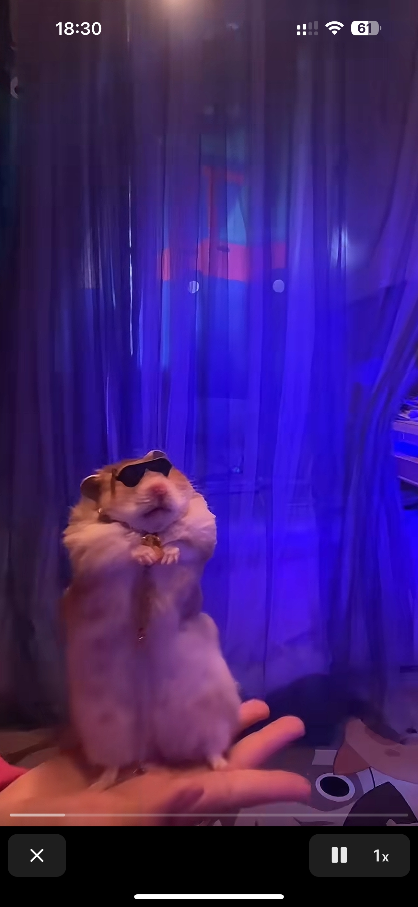
虎鼬：我嘎巴死你面前 你跟警察解释去吧
警察：吓死的也算哈[看]
虎鼬：你看着我长相猜猜我几级[看][看][看]
今天我也是第一次见，发出来才从网友口中知道这是国家一级保护动物虎鼬，并没有伤害它，追它只是因为好奇，最后它钻到一个洞里去了。大家不要再问抓到没有，味道怎么样了，这可不邢问呀。[捂脸]
虎鼬:你才是小东西，你动我一下试试[尬笑]
虎鼬:看你那虎出，追我干啥?[捂脸]
虎鼬，国一，我看刑[捂脸][捂脸]
直到这儿我都还以为是个小猫在做仰卧起坐[宕机] 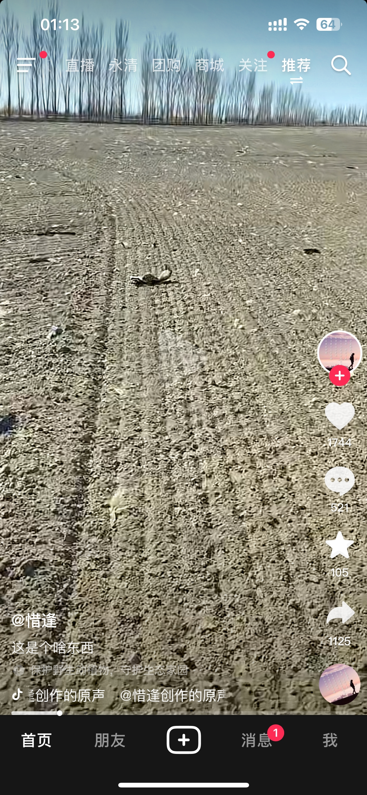
先提前了解一下。 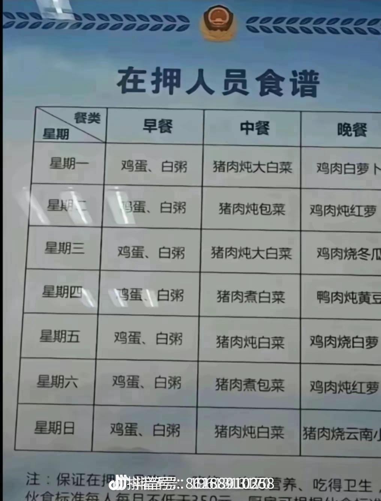
第一次看到这么宽的猫
《这是…？？一辆大卡猪！！！！！》 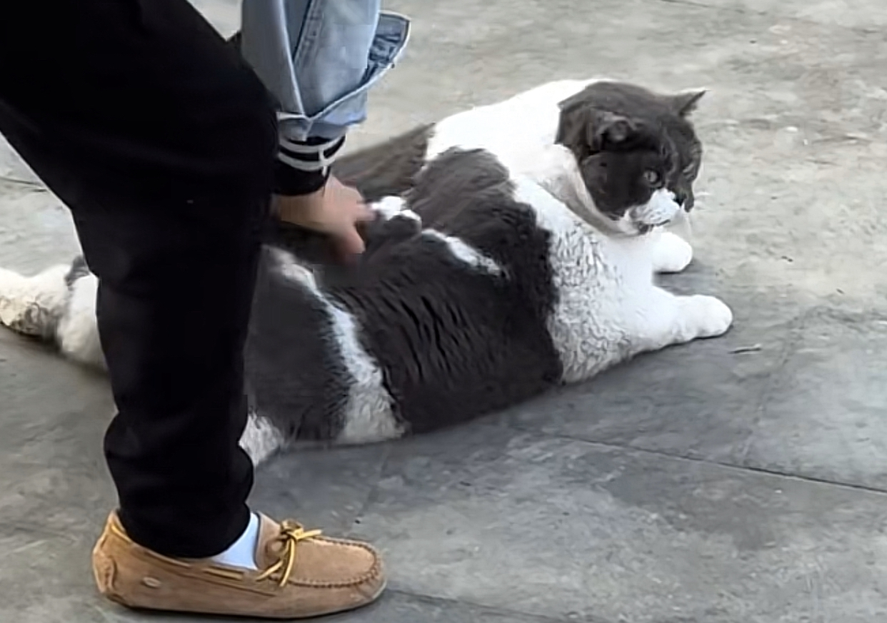
原来胖到一定程度显脸小[宕机] 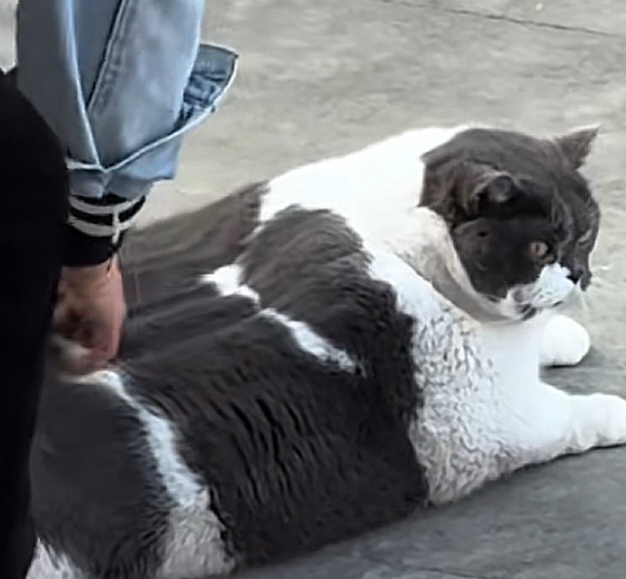
这已经不是一辆猫形容了，这要用做形容了[捂脸]
和我家的咪咪差不多 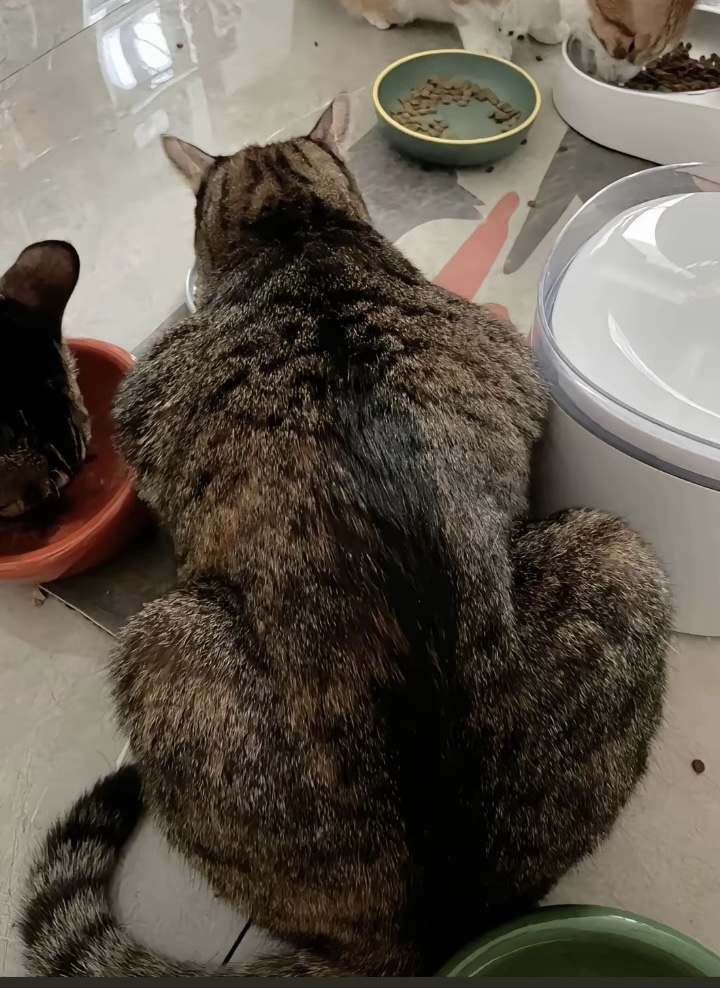
它可能是我目前。刷到过。最胖的猫[捂脸][捂脸][捂脸]
两只猫拼在一起的感觉
它相当于人类的400斤[看]
很奇怪，同时刷到两个一模一样的视频，只是翻转了一下 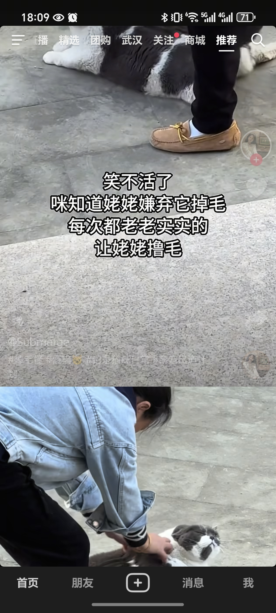
狗：感谢消防员把这个水鬼给按住了，不然我今天就要淹死在这里了
狗：老登，消防员没来之前是我在救你
狗掉水里，自己不会游泳，在狗命和人命中，你竟然选择了不要自己狗命[看]
你猜猜为什么有个游泳姿势叫狗刨呢？[捂脸][捂脸]
你出发点是好的，但是出发了就不好了[看]
哈哈哈哈哈哈哈哈，这狗还怪有良心的，等消防员来了才抛弃主人
狗：说谁不小心？我是自己跳下去的，不是不小心[发怒]
[看]但凡会点水的都知道有个姿势叫做狗爬式，你猜狗爬式说的是哪个东西游泳[看]
好笑吗，我只看到两瓶冰红茶和一瓶冰糖雪梨的绝望
三个小美女，给叔叔看的心都化了
此刻有人我吃🪨
我在想有一天突然我不行了，会不会有人这样救我呢？[流泪]
看到猫咪活了，太开心了，开心的眼泪都流出来了[流泪]
[感谢][感谢][感谢]好人！积德长寿！！！
从这过来的 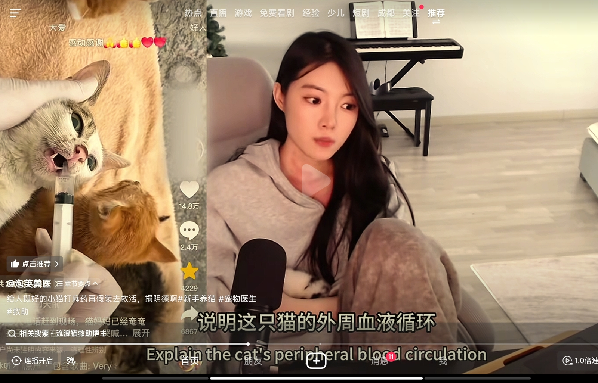
初恋来了 送她一个包
他俩把房子抵了 钱吞了
说是买了个古董 [看]
哦，我的女娲娘娘啊，春雪女士这壮硕的身材[不失礼貌的微笑]
看来是我越界了
快结束了吗？下局一起？
到底是怎么回事？我第一次听冬眠[感谢]
这饭菜很韩国
韩国香肠真袖珍啊，不仔细看还以为是糖醋大青虫呢。
泡菜，大酱汤，紫菜包饭，啤酒炸鸡，部队火锅……貌似你们也只有这些呀
明天就要和陈友谅大战了[赞][赞][赞]求击败陈友谅教程[玫瑰][玫瑰][玫瑰]
吉克隽逸唱彝族歌就是绝杀
这歌没人能超过王睿卓，她唱的特别自然舒服[看]
吉克隽逸的声音已经听不出大山的感觉了
吉克隽逸的音色我真的不想夸了，华语断层独一档音质，有大气磅礴，有细腻柔美，辨识度极高，声音穿透力也极强！请问华语乐坛还有谁拥有这样的音色？？？
这首歌还得王睿卓 其他人不行 只能清澈明亮 不用太多技巧
两位少数民族歌手都走出了大山啊[赞] 十年前王睿卓唱吉克俊逸的《带我到山顶》走出大山 十年后王睿卓带着自己的代表作彝族歌曲《大山》和吉克俊逸同台
再过15年 微信设置仅聊天
她好感性，这么一说就要流泪了[流泪]
讨厌的人贩子，非要把她说哭[捂脸][捂脸][捂脸][捂脸]
大晚上的菲佣你干嘛呀
泪目了[泣不成声] 佳佳小小年纪共情能力好强啊
全世界都有女儿，就我俩儿子[流泪][流泪]
黄老佳觉得只要用力搓脸，就可以把眼泪推回去[流泪][流泪] 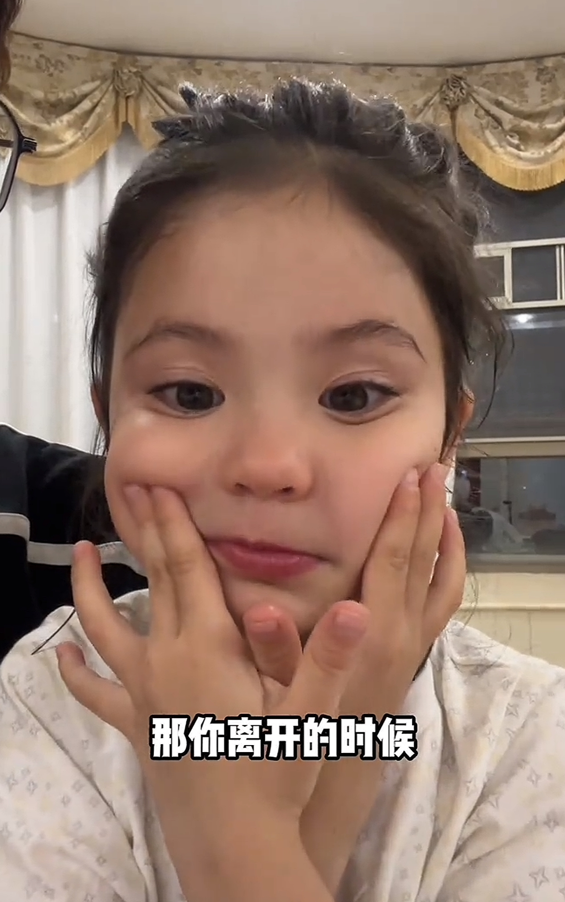
佳佳快把自己说哭了哈哈哈
其实以前我觉得帮小孩洗澡没什么，直到有一次去朋友家，她给她女儿洗澡，会把所有男生请出这个房间，包括小孩的爸爸，小孩的衣服和贴身衣服都是分开洗，不和大人的混洗
我找到了佳佳长大以后的样子[发呆]
要哭了，佳佳真的好感性啊！[眼含热泪][眼含热泪][眼含热泪] 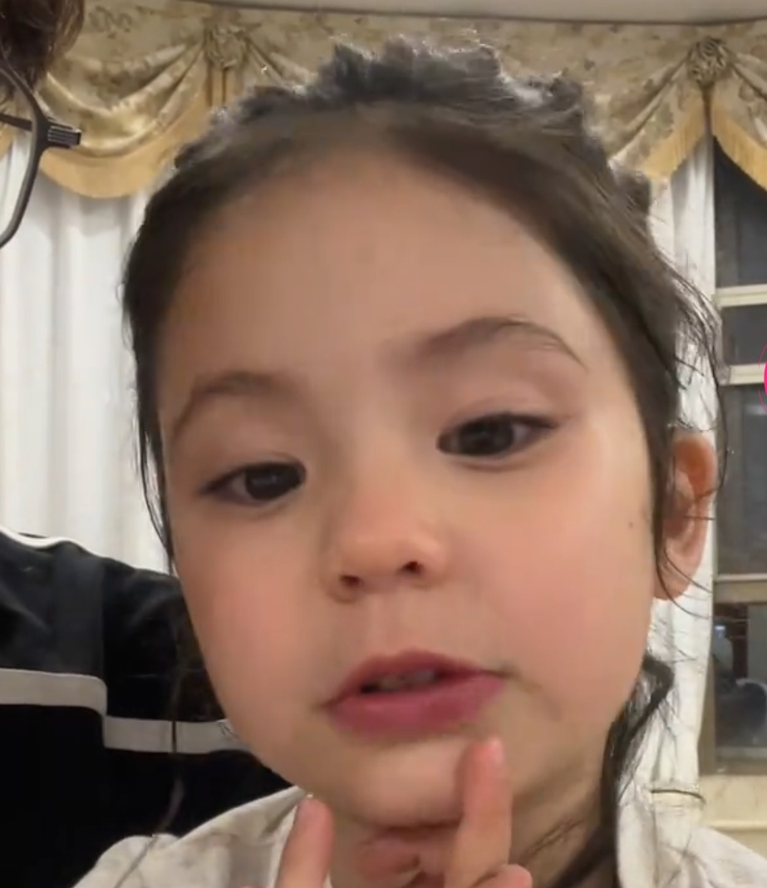
不是孩子离不开父母，是父母离不开孩子[泣不成声][泣不成声][泣不成声]
佳佳共情能力真好强啊，你只是随便说几句，她好像想到那种场面，说话都快哭了[泣不成声]
昨晚也感性了一番，其实是我们离不开小孩 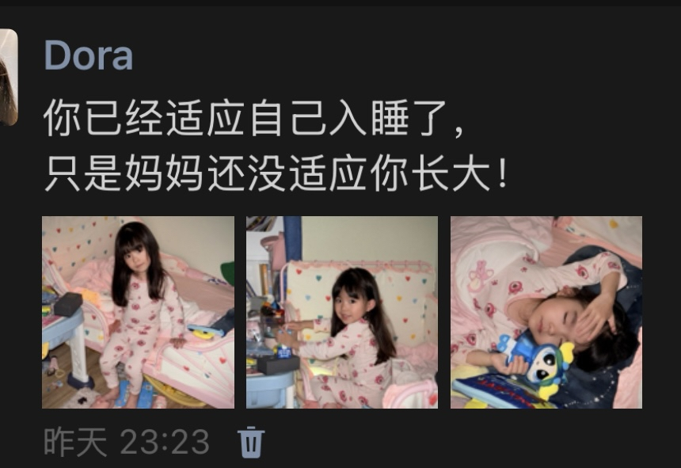
养女儿的今天来了一个天塌的消息，就是拿着身份证，去哪都可以结婚？[流泪][流泪][流泪]
我的天呐，怎么会有这么漂亮的孩纸[送心][送心][送心] 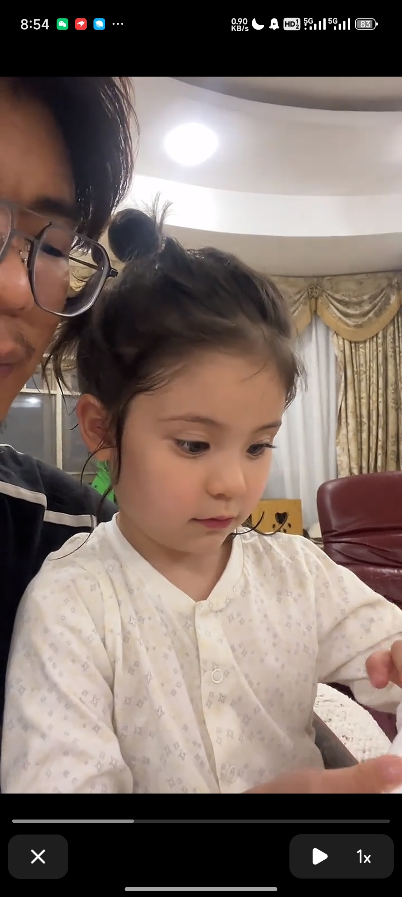
能感受到佳佳结婚安集的心情了[流泪][流泪]
老六，你真的该考虑上班了[捂脸][捂脸][捂脸]要不她越发独立，你越发不舍
把moi搞得快哭了，我也快哭了[泣不成声] 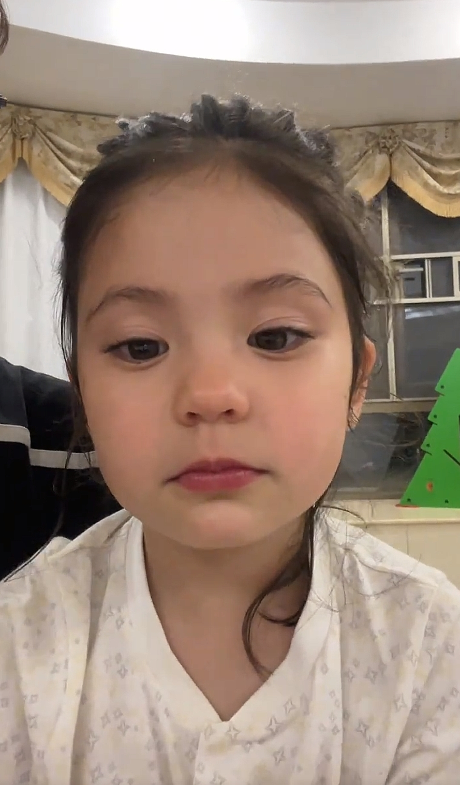
我服兵役时是森林武警，武警黑龙江省森林总队佳木斯市支队直属大队，我们在大兴安岭地区，内蒙古满归境内灭火主要靠开挖隔离带，灭火机，灭火扫把，灭火弹，非常之危险，直升机投放进原始森林，徒步每天走70多里山路，时间最长一次28天，给养进不来饿得烤大蒜吃，喝有沙虫的腐水，出来除了眼白是白的，全身都是火灰汗水混杂的厚厚一层泥垢，175的个子瘦到只有80斤，现在祖国强大了，科技进步了，为祖国点赞。
确实，与其让无人机演绎灯光走秀，不如让无人机赶紧落实参与救援
太好了，這樣就不需要消防員去冒險了。[流泪][流泪][流泪]
前几年要有这高科技，也不至于四川死了那么多十几岁的英雄[流泪]
这才是高科技的正确用途，而不是取代快递员，取代司机，取代厨师，取代加油员。这个才是人类科枝进步[赞][赞][赞][赞][赞][赞][赞][比心][比心][比心]@
看到这真的热泪盈眶，不用消防员再人肉盾牌似的往里冲了，每次看到新闻，消防员灭火我都感觉我喘不上气儿了[流泪]
马云说得真好，机器应该去干人类不能干的事而不是取代人类[比心]
面对大家提出来的疑问作以下回答: 1：到达现场后利用地面救援人员入场前时间空隙，利用红外热成像确认火场周边无人，使用无人机向人员难以第一时间抵达的险峻区域迅速投掷灭火弹、水基弹，压制火势，同步运用无人机空中侦查实时传输火场数据，为指挥中心提供空地协同作战体系。2:地面人员进场后再用无人机高空喷水模拟下雨天气形成隔离屏障，配合地面人员降温灭火，3:明火扑灭，确认人员全部安全撤离火场后覆盖灭火干粉阻止复燃。4:无人机队伍机组值守实时监测火场温度及有无复燃隐患。5：本次实战再次验证无人机在应急救援中的不可替代性。也有很多不足。我队将持续优化技术方案，为守护群众生命财产安全贡献科技力量。
如果没有经历过这些日子的人是不能明白金明的眼泪和委屈的。生活在一个贫穷的家庭就是原罪。任何人都没错，但任何人都很痛苦。孩子受到父母的托举，站在他们用血和泪建成的高楼上看世界，看到广阔天地的时候第一个想法不是赞美和高兴，而是内疚。那种明明什么错都没犯但依然深到可以淹没你灵魂的愧疚感。吃东西时会想爸妈吃了吗，出去玩会想爸妈休息了吗，花每一笔钱都在想他们要多辛苦才能挣来。永远在想要怎么样才能回报这一切。没有人能心安理得地感到幸福，只有深深地，无尽的绝望淹没你。
爸爸说过最重的话就是叫她的全名“梁金明”[流泪]
“是荷尔蒙对抗荷尔蒙，妈妈又输了”
其实金明也没错 看到一个帖子说东亚女的一生都是在愧疚中长大的[流泪]
听爸爸大声喊“梁金明”三个字我都能哭的稀里哗啦的[流泪]
金明啊，妈妈并不是把她的希望放在你身上，而是希望你可以通过他们的托举让身为女儿的你能越来越好，可以有能力摆脱所有对你不好的困境
可是她知道说的话会伤害父母，每次都要那样说[流泪][流泪]然后自己又在心里内疚[流泪]
韩国真的很会拍这方面，描写的很真实很细腻，没有偏袒哪一方，把双方的难处很公正的摆在我们面前[流泪]
观众两边都能共情，可惜双方不能共情，真的很难受，生活中和父母就是这样的[流泪][流泪][流泪]
我被内疚感淹没了，这句话谁懂[流泪]
唐三：细思极恐
小舞是十万年的兔子[看]求小舞生过多少
还有翻车鱼。说明一件事:在自然界繁殖能力才是王道。其他的都是奇技淫巧。
Read more: